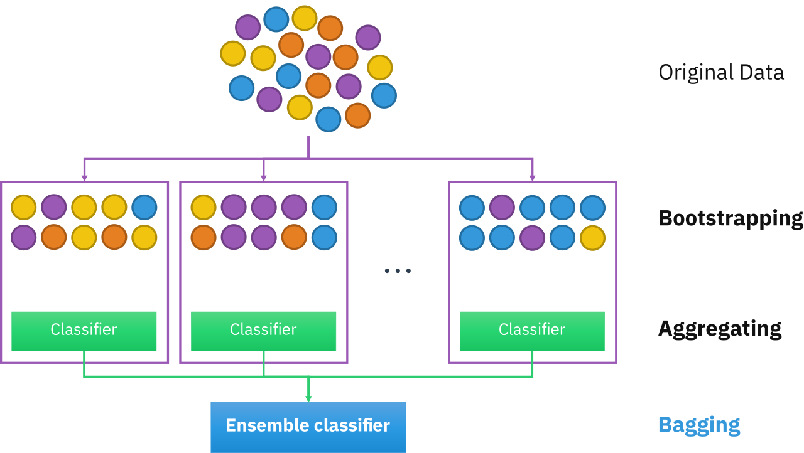
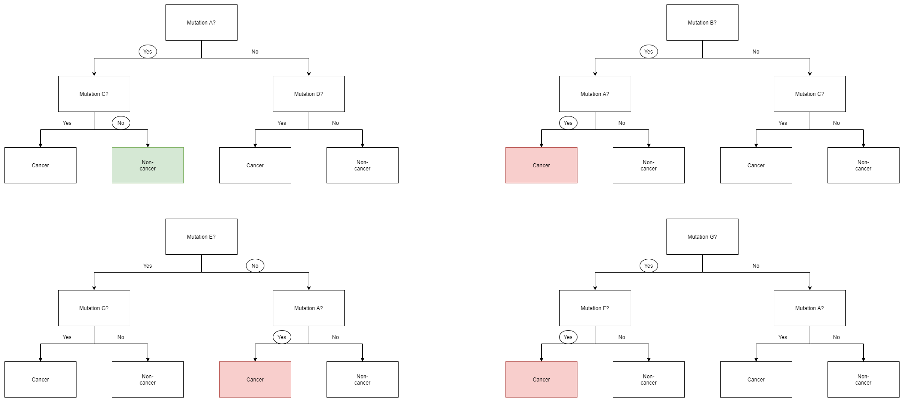

Ensemble learning methods are made up of a set of classifiers—e.g. decision trees—and their predictions are aggregated to identify the most popular result. The most well-known ensemble methods are bagging, also known as bootstrap aggregation, and boosting.
Bootstrap aggregating, also called bagging (from bootstrap aggregating), is a machine learning ensemble meta-algorithm designed to improve the stability and accuracy of machine learning algorithms used in statistical classification and regression. It also reduces variance and helps to avoid overfitting. Although it is usually applied to decision tree methods, it can be used with any type of method
Given a standard training set D of size n, bagging generates m new training sets D i , each of size n′, by sampling from D uniformly and with replacement. By sampling with replacement, some observations may be repeated in each D i
This kind of sample is known as a bootstrap sample. Sampling with replacement ensures each bootstrap is independent from its peers, as it does not depend on previous chosen samples when sampling. Then, m models are fitted using the above m bootstrap samples and combined by averaging the output (for regression) or voting (for classification).

The random forest algorithm is made up of a collection of decision trees, and each tree in the ensemble is comprised of a data sample drawn from a training set with replacement, called the bootstrap sample.
Random Forests introduce element of variability amongst the bootstrapped trees. In addition to each tree only examining a bootstrapped set of samples, only a small but consistent number of unique features are considered when ranking them as classifiers.
This means that each tree only knows about the data pertaining to a small constant number of features, and a variable number of samples that is less than or equal to that of the original dataset. Consequently, the trees are more likely to return a wider array of answers, derived from more diverse knowledge.
This results in a random forest, which possesses numerous benefits over a single decision tree generated without randomness. In a random forest, each tree "votes" on whether or not to classify a sample as positive based on its features. The sample is then classified based on majority vote.
An example of this is given in the diagram below, where the four trees in a random forest vote on whether or not a patient with mutations A, B, F, and G has cancer. Since three out of four trees vote yes, the patient is then classified as cancer positive.
